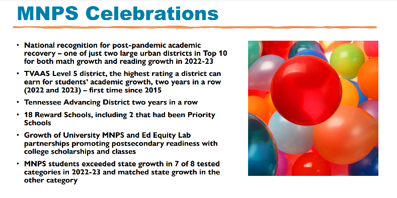
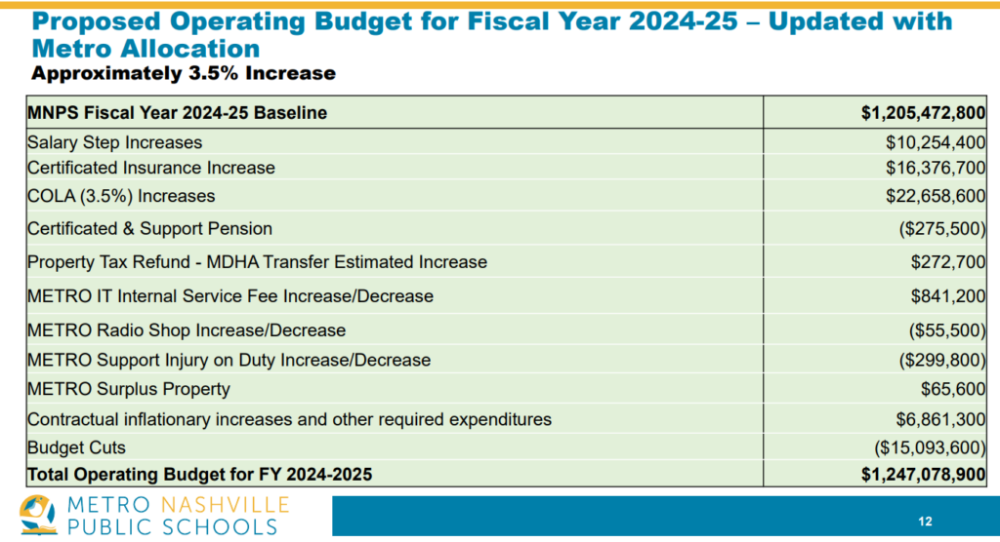
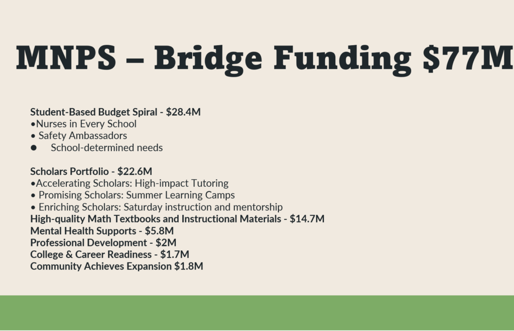
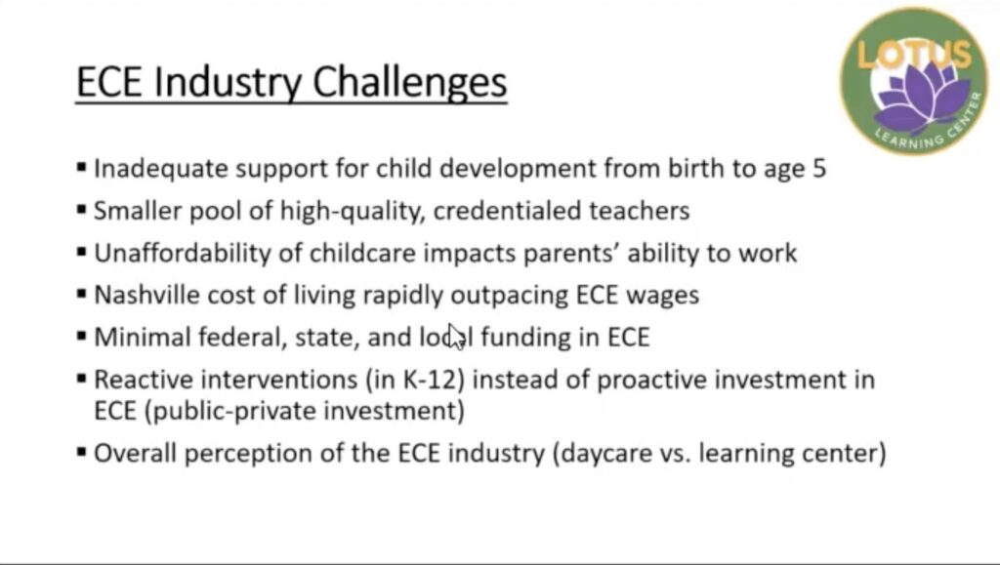
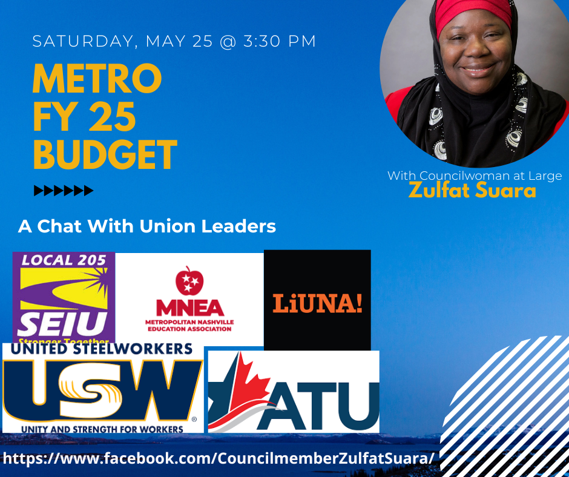
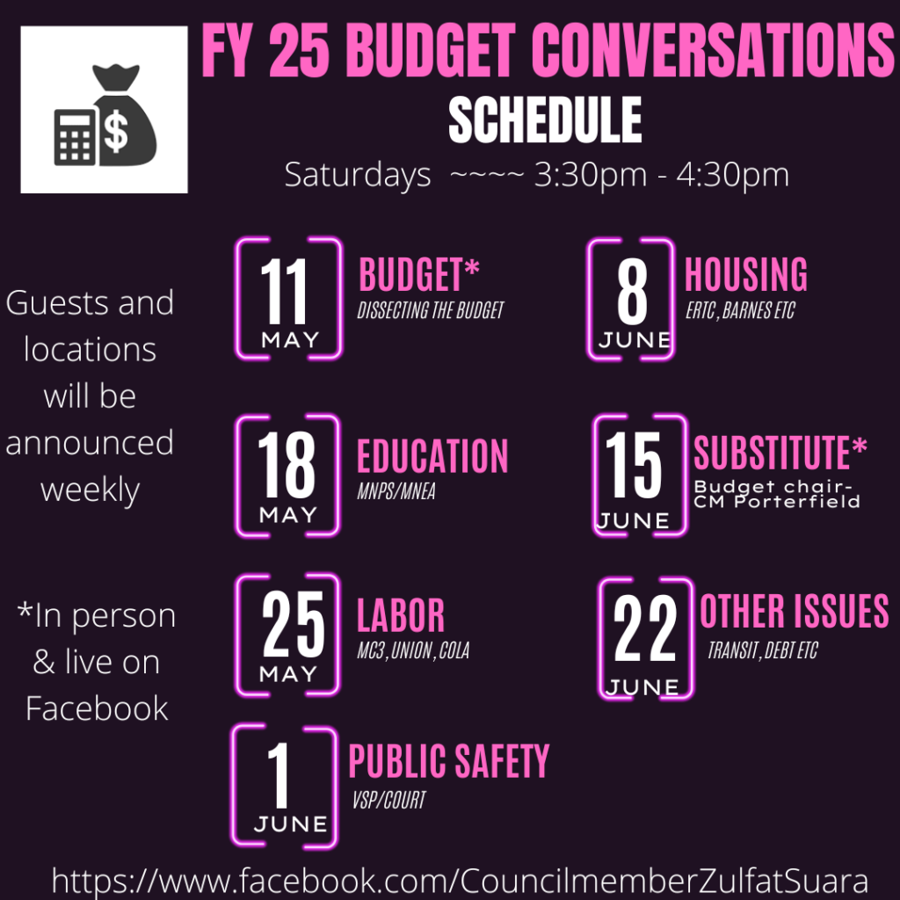

A Heartfelt Discussion on the Budget & Our Children’s Education
Hello, everyone! I hope you all enjoyed our budget talk last week with CM Toombs, where we broke down the initial budget. If you missed it, you can catch up here. This week, I’m thrilled to dive into a topic very dear to my heart – our children’s education. We had the pleasure of hosting the honorable Freda Player, Vice Chair and Budget Chair for the school board, along with Mr. Tosin Okunoren from Lotus Learning Center. Ms. Player provided insights into the school board budget for this fiscal year, and Mr. Okunoren discussed early childhood education, highlighting what we need to know and what actions we must take to address this growing crisis.
Celebrating Our Achievements
First, let’s celebrate some fantastic news! Congratulations to Dr. Battle, the board, teachers, students, and the entire MNPS team for ranking as one of ONLY two school districts nationwide in math and reading. MNPS was also recognized as a Level 5 school for two consecutive years and boasts 18 reward schools in the district. Kudos to everyone for their hard work and dedication!

Breaking Down MNPS FY25 Budget
It’s wonderful to see our investment in the school district paying off. So, how does this year’s budget measure up?
Continuity of Services
The continuity of services requirement ensures that school districts have sufficient funds to maintain the previous year’s service levels. For FY25, MNPS will need $1.268 billion, up from $1.205 billion in FY24, adjusted for inflation and cost-of-living adjustments.
.
Key Budget Increases:
- $22.7M for a 3.5% Cost of Living Adjustment
- $10M for salary step increases for teachers and staff, including $400K for cafeteria workers
- $6M for inflationary increases in contracts and other required expenditures
- $16M for insurance increases due to higher claims and an aging population

Mayor O’Connell’s FY25 budget allocates an additional $41.6M to MNPS, with another $18M from the fund balance surplus, totaling $59.6M.
Bridge Funding:
Over the past couple of years, MNPS received millions in the Elementary and Secondary School Emergency Relief Fund (ESSER). The funding enabled MNPS to have Advocacy Centers to address social-emotional learning (SEL) in every elementary school as well as safety ambassadors. Following the Covenant School shootings, MNPS doubled down on safety and made sure that there were extra safety measures, particularly for our elementary schools.
Other ESSER funded programs include the Accelerating Scholars, Promising Scholars, and the Enriching Scholars programs. The Accelerating Scholar is a high-impact tutoring program while the Enriching Scholars program provides Saturday instruction and mentorship. The Promising Scholars program is a great summer that kids usually enjoy. It’s a fun version of school to summer slide and enables students to keep up the same academic memory and skills, so they don’t have to make it up in August when they come back to school.
The Bridge Funding is to ensure these great programs that schools have put in place, that have really helped make some really great strides for MNPS, that those programs continue. To do so, MNPS will be allocating $77M from its Fund Balance surplus

Addressing Other Key Questions:
Self-Insurance Program:
The $16M increase in insurance costs is significant. MNPS opted for a self-insured plan for teachers to meet healthcare standards that is equivalent or better than the state’s system. Delayed care during the pandemic has led to more serious health issues and increased claims. Another factor is an increase in the aging population which also means an increase in health events.
Textbooks:
Textbooks for different subjects are purchased each year. The textbook adopted this year is the science textbook. So to purchase science books for the entire districts where each student has their own access to copy, Mayor O’Connell allocated $18M in fund balance surplus to MNPS for textbook purchases.
Budget Cuts:
The operating statements shows budget cuts of $15M, what impact does this have on programming. There is no impacts on programs and services. The cuts were initiated at the begging of the budget process. All programming shortfalls are now funded via the Mayor’s surplus fund allocation for textbooks and MNPS $77M bridge funding.
State Funding:
The average statewide education funding by the state is 72% with local government funding 28%. Unfortunately, the reverse is the case for Metro. The state funding for MNPS is only 21%, leaving Metro to make up the 79% difference. Although the final state funding amount for FY 25 has not been received from the state, MNPS is not expecting a shortfall. The $20 million shortfall in FY 23 came from the old formula (BEP) which is no longer in use. The governor signed a new school funding formula – TISA to law in May 2022.
Family Liaison Program:
Metro Council funded this initiative in FY24, providing liaisons for non-English speaking families to enhance parental involvement and student performance. MNPS intends to continue to hire and fill the family liaison positions as they provide direct contact to the students and parents
The State of Childcare
Children aged 0-5 develop most neural connections during this period. Investing in early education is crucial for their long-term academic success. Mr. Okunoren from Lotus Learning Center shared insights into early childhood education and its challenges:
Daycare versus learning center
The Learning Center is meant to impart what these establishments are doing. They are refining children’s fine motor skills, socio-emotional development, cognitive development, attention, etc. The choice of calling it a learning center instead of a daycare is acknowledging that the centers are educating and instilling values in these early stages.
CHALLENGES
The challenges facing early childhood education can be grouped into the following categories:

ECE Centers Challenges:
Early Childhood Centers are being challenged more and more. First, ECE Centers are struggling to retain talent – fighting for talent within a smaller pool of fewer passionate teachers and unsustainable wage expectations. This creates an infant waitlist and inconsistent service within many ECE Centers. ECE centers struggle to compete with MNPS and other employers offering better pay and benefits, leading to service inconsistency and closures.
Children Challenges:
From the ages of 0-5, children are building the most neural connections – despite a majority of funding into the K-12 landscape rather than early childhood education. It is a crucial investment as this builds into growing students from Kindergarten all the way to 12th grade. Additionally, Early Childhood Education Centers are heavily struggling with talent retention. It should be noted that teachers and staff take months to build strong relationships with students; however, if staff is being changed every couple of months, students are unable to have continuous service or care – which becomes critical to the child’s development.
Family Challenges:
One big issue for families is affordability – forcing parents to pull their children from these centers and often hand them to unlicensed providers or family members – missing out on the opportunities to develop the child’s education early. Additionally, if a parent doesn’t have the options above, and is unable to afford childcare are now being forced to leave the workforce due to the unaffordability of services. This leads to lost income and added stress for the family and a smaller workforce for the city of Nashville.
Staff Challenges:
Staff are having to struggle with unlivable and unsustainable wages. Low wages and high living costs in Nashville push staff to commute long distances or leave the sector entirely.
Business Challenges:
As mentioned earlier, every parent who cannot afford childcare may become a parent who has to get pulled from the workforce, losing economic growth for Nashville. Additionally, heavy investment in 0-5 education causes a domino effect – in which the less we invest, the less educated our workforce becomes. Students end up not being able to develop, grow, and learn at the same rate as their peers.
Informal Care:
The issue with using informal care is that it takes potential workers out of the workforce and does not utilize every moment of education the children could be receiving.
Solutions and Local Funding Initiatives
Other municipalities, like Multnomah County in Portland, Oregon, have successfully implemented local funding solutions, such as the Preschool for All program funded by a personal income tax. Nashville can follow suit to address these challenges by:
- Ensuring employees are paid a living wage
- Supporting Metro Action Commission’s Head Start and Early Head Start programs
- Supporting Nashville State, NECAT and other institutions Child Care training programs
- Conducting countywide childcare surveys recommended by the Women’s Caucus
- Including childcare centers in new developments, like the East Bank project
- Normalizing funding for early learning centers
Moving Forward
President John F Kennedy says “ “Let us not think of education only in terms of its costs, but rather in terms of the infinite potential of the human mind that can be realized through education. Let us think of education as the means of developing our greatest abilities, because in each of us there is a private hope and dream which, fulfilled, can be translated into benefit for everyone and greater strength for our nation.”
By prioritizing education including early learning education, we can improve outcomes for children, support families, and drive economic growth in Nashville.
Thank you for your attention to this critical issue. Let’s continue working together to support our children’s education and future.
If you missed my Budget Conversation with School Board Vice Chair Freda Player & Mr. Tosin Okunoren, you can watch the entire episode at the link below.
NEXT BUDGET CONVERSATION
This year’s budget conversation will be every Saturday at 3:30 pm on Facebook until the budget is passed by Metro. I am super excited about this week’s budget conversation. I get to chat with union leaders from @SEIU @LIUNASoutheast @MNEA_ ATU & USW. Join us today at 3:30 on Facebook live at https://www.facebook.com/CouncilmemberZulfatSuara/ with your questions & comments.


Please continue to stay engaged and share your thoughts and ideas about the budget and other important issues facing our city. I value your input and believe that open dialogue and collaborative decision-making are key to effective governance. Together, we can ensure a bright and sustainable future for our great city.
Stay tuned for future budget conversations and feel free to reach out if you have any further questions.
Thank you for joining us in this conversation.